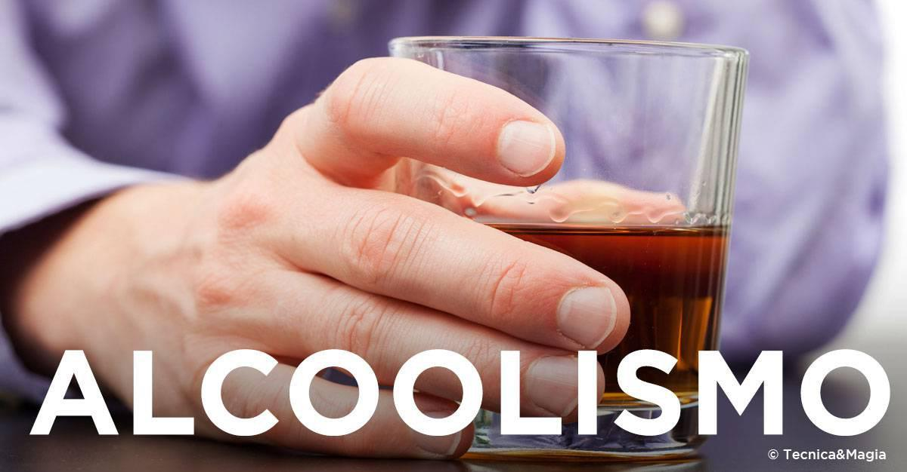
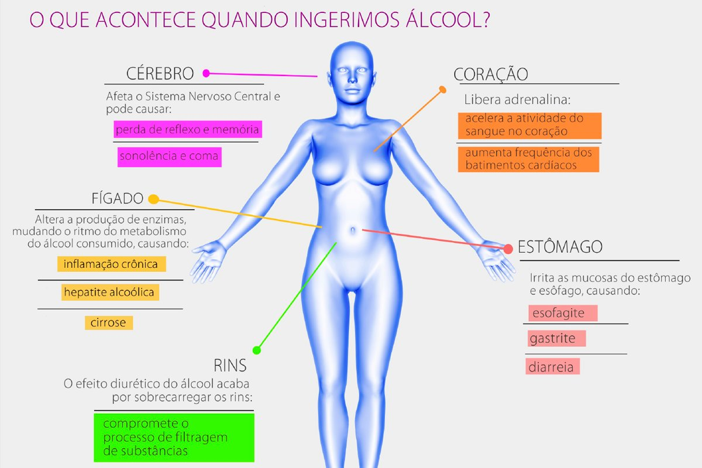

O que faz com que algumas pessoas sejam vulneráveis à dependência do álcool e outras não? Neste Ciência USP
Responde, o psiquiatra Arthur Guerra de Andrade, professor da Faculdade de Medicina da USP, discute essas e
outras questões sobre o tema “alcoolismo”.
Reportagem: Bruna Larotonda, Pedro Maia e Joyce Rossi. Edição: Alan Petrillo e Bruna Larotonda.
Fonte: USP
O que é considerado um alcoólatra? O ALCOOLISMO é caracterizado pela vontade incontrolável de beber, falta de controle ao tentar parar a ingestão, tolerância ao álcool (doses cada vez maiores para sentir os efeitos da bebida) e dependência física, que se manifesta com sintomas físicos e psíquicos nas situações de abstinência alcoólica. Fonte: Hospital Israelita Albert Einstein
>> O que acontece no seu corpo quando você ingere bebida alcoólica?. Beber com os amigos para comemorar uma conquista, uma vitória ou apenas mais um dia de missão cumprida, pode parecer um hábito saudável, mas não é.

O assunto é sério. Mais de dois bilhões de pessoas no mundo consomem bebida alcoólica e o fato
de ser uma droga lícita na maioria dos países influencia muito no seu impacto: cerca de 4% de todas as
mortes no planeta envolvem o uso de álcool, segundo a Organização Mundial de Saúde (OMS), o que representa
algo entre 2,3 milhões de mortes ao ano diretamente ocasionadas pelo uso, ou abuso, de bebida alcoólica.
“Não existe uma fórmula para consumo seguro, já que são vários os fatores que
influenciam em uma experiência
etílica, como idade, peso corporal, quantidade de gordura no organismo, ritmo do metabolismo do fígado.
Porém, estudos indicam que para um homem adulto há baixo risco de desenvolver dependência quando ele consome
duas doses de álcool em um dia, seguidas de dois dias de abstinência. No caso da mulher, falamos de uma dose
por dia, seguida pelo mesmo período sem consumo”, explica Claudio
Jerônimo, psiquiatra e diretor da Unidade
Recomeço Helvetia.
Vamos partir do princípio de que, genericamente, uma dose tem em média de 10 ml de etanol
puro, que demoram cerca de uma hora para metabolizar, quer dizer, sair do organismo. Devemos ainda
considerar a variação da
concentração de álcool das bebidas, que pode chegar até a 40%. Com isso em mente, te convidamos a uma
pequena viagem para conhecermos o que acontece no seu corpo quando você ingere álcool. Preparado?
Danos internos O uso frequente de bebida alcoólica pode levar a situações de abuso e dependência química. Quando os sintomas do uso do álcool começam a demorar em aparecer, ou ficam amenizados, isso significa que o organismo está se acostumando à substância, ou seja, quando achamos que estamos ficando mais fortes para a bebida, ou seja, mais tolerantes, isso quer dizer que já nos adaptamos a ela.

>> Diga-nos sobre qual tipo de dependência química você deseja se informar.